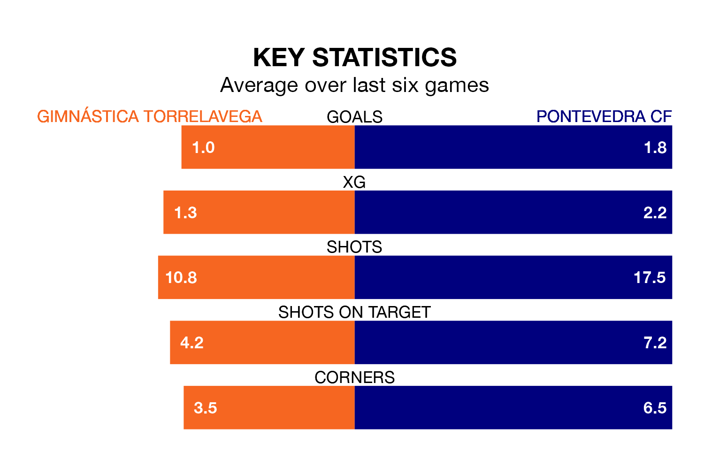

Mid-season relegation candidates Gimnástica Torrelavega face a challenge against high-flying Pontevedra CF at the Estadio El Malecón on Sunday.
Gimnástica Torrelavega are 16th in the Segunda División RFEF Group 1 table, and have picked up four wins and four draws in their 17 games to date.
Pontevedra, meanwhile, are second in the standings with 33 points, having won nine and drawn six, and are two points behind table-toppers Ourense CF.
With 37 goals in 17 games so far this season, Pontevedra are the league's highest scorers with 2.2 goals per game. And they are conceding fewer than average, letting in 11 goals at a rate of 0.6 per game.
Gimnástica Torrelavega, meanwhile, are average scorers, with 1.2 goals per game. They have conceded 1.6 goals per game.
The home side are in bad form in Segunda División RFEF Group 1, with one win and a draw from their last six games.
With three wins and two draws over that period, the visitors' form is much better – they have taken 11 points from 18, compared to Gimnástica Torrelavega's four.
Gimnástica Torrelavega's last match was on January 7, a 3-1 loss against Coruxo.
Pontevedra drew 1-1 with Villalbés last time out, also on January 7.
Updated: 11:31, 09/01/24